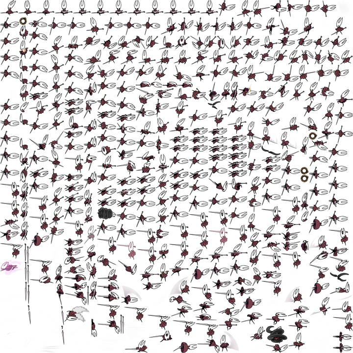

Notícias? SIM!!!!
Hollow Knight: Silksong estará jogável em setembro de 2025… em um museu australiano
O jogo da Team Cherry, em desenvolvimento há muito tempo, é um dos mais aguardados do mundo e está no topo da lista de desejos do Steam há anos. O estúdio, sediado em Adelaide, no sul da Austrália, ainda não divulgou quando Silksong será lançado além de uma vaga data de 2025, mas pelo menos sabemos que ele estará jogável para aqueles que puderem visitar o Museu Nacional de Cultura Cinematográfica da Austrália, o ACMI, a partir de 18 de setembro.
Silksong estará jogável no museu de Melbourne como parte de uma exposição de videogames chamada Game Worlds, que também incluirá exibições que exploram o design e a direção artística do jogo.
Como parte do anúncio, a ACMI compartilhou uma folha de sprites de Silksong, abaixo, um dos vários elementos de design do jogo que estarão em exibição na exposição Game Worlds. A imagem foi fornecida à IGN com permissão.
